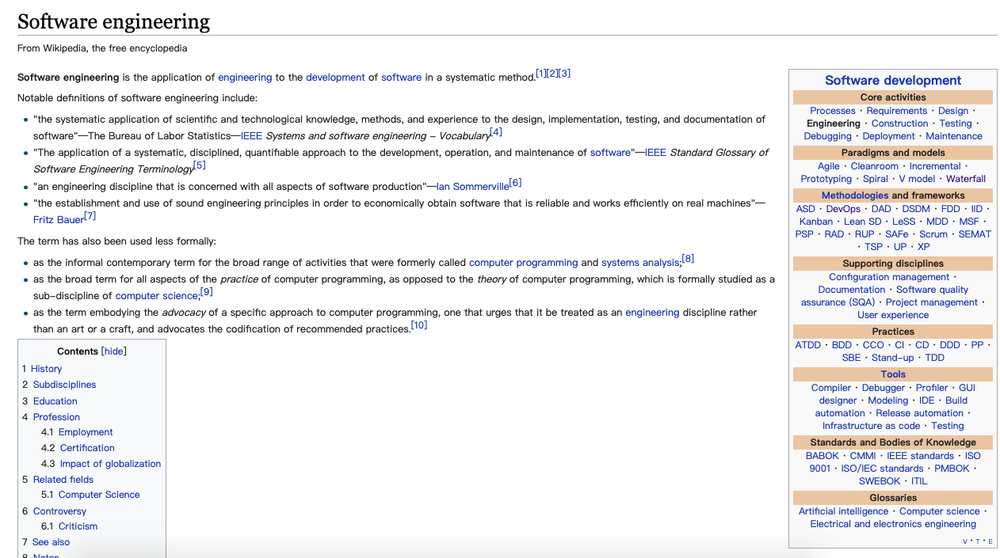
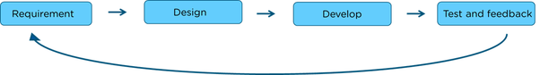
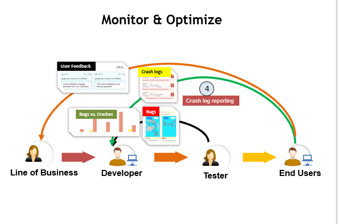
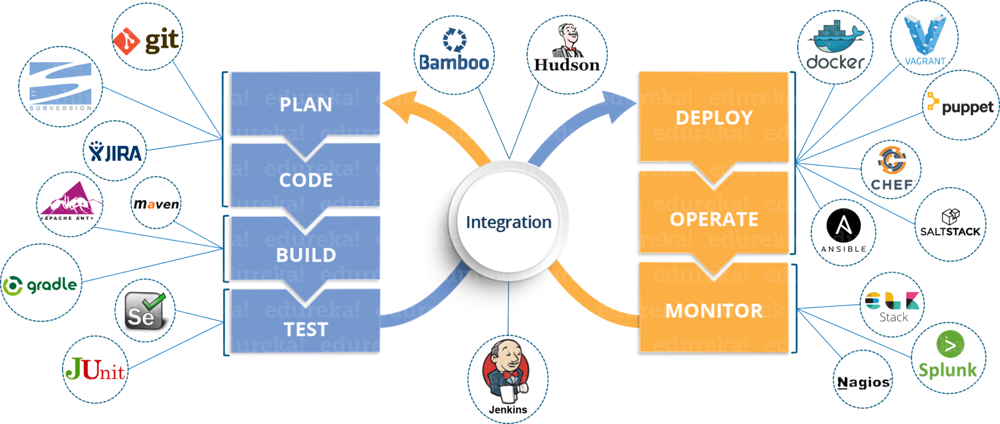

打造高效工程团队
让你焕发青春
我是 右领军大都督
背景
我们遭遇了什么从企业间团队信任建立问题引发的思考
知识壁垒
外行眼里的实业工程
外行眼里的软件工程
根本原因是？
过时的工程模型
瀑布式

敏捷
问题
- 没有持续、规范的客户反馈处理机制
- 没有关注软件交付后的问题
- 各阶段的耗时都很长
怎么办
dev-ops
devops model

devops文化
整合工程师(研发、IT-ops、QA等)，统称：devops工程师。
并且对软件持续交付的全生命周期负责，包括：需求准备、开发、测试、基础架构部署、应用部署、持续监控、用户的反馈收集、再次进入循环
dev-挑战与方案
| 挑战 | 方案 |
|---|---|
| 部署等待 | 通过持续集成方案可以做到提交即部署，加速测试验证 |
ops-挑战与方案
| 挑战 | 方案 |
|---|---|
| 生产环境宕机管理 | 通过容器/虚拟技术，可以快速保质复刻多个相同的环境以保证在线服务正常 |
| 基础设施管理自动化 | 通过配置管理方案管理或者执行各种配置组合 |
| 服务器太多 | 通过持续监控、反馈采集方案来解决 |
| 诊断难、反馈难 |
好处
- 发布周期更短
- 需求响应更快
- 线上环境更可靠
- 扩展性更强
- 团队协作文化更好
究极模式
devops模型
工具链一瞥
Coding
- 统一IDE，例如: vscode, idea
- 统一terminal工具，例如: iTerm2, SecureCRT
- 统一代码风格，例如: 阿里巴巴Java开发手册, eslint-config-react-app
Building
持续集成常见工具
Testing
测试类工具
Packaging
打包、仓库类工具
Releasing
持续交付类工具
Configuring
基础架构配置类工具